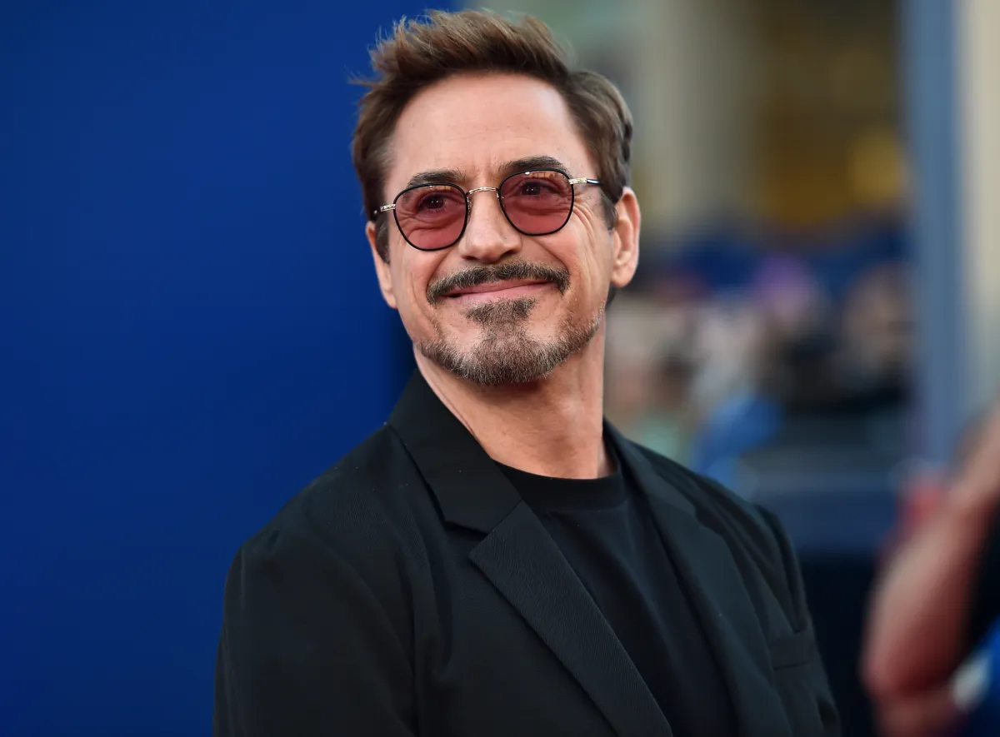

Biografía
Robert John Downey Jr. es un actor, actor de voz, productor y cantante estadounidense.
Inició su carrera como actor a temprana edad en varios filmes dirigidos por su padre, Robert Downey Sr.,
y en su infancia estudió actuación en varias academias de Nueva York. Se mudó con su padre a California, pero abandonó sus estudios para enfocarse completamente en su carrera.
Tras numerosos proyectos fallidos, Downey ganó relevancia en el cine protagonizando la película Chaplin (1992), actuación con la cual ganó un BAFTA y fue nominado a los premios Óscar y los Globo de Oro.
Sin embargo, se vio envuelto en una serie de problemas legales por posesión de drogas que llevaron a que fuera arrestado en numerosas ocasiones y a su vez que las productoras se negaran a contratarlo para nuevos papeles.
Gracias al apoyo de Mel Gibson, Downey pudo regresar a la actuación y en 2001 ganó reconocimiento en la televisión con su papel en la serie Ally McBeal, con el cual ganó un Globo de Oro.
En 2004 debutó como cantante con el lanzamiento de su álbum debut The Futurist. En 2008, recibió elogios de la crítica por su papel en Tropic Thunder (2008), actuación por la cual sería nuevamente nominado a los premios Óscar.
También fue elogiado por su papel en Sherlock Holmes (2009), con el cual ganó un segundo Globo de Oro y realizó una secuela titulada Sherlock Holmes: Juego de sombras (2011).
Asimismo, Downey alcanzó un auge en su carrera al interpretar al personaje de Iron Man en el Universo cinematográfico de Marvel, protagonizando las películas Iron Man (2008), Iron Man 2 (2010),
The Avengers (2012), Iron Man 3 (2013), Avengers: Age of Ultron (2015), Capitán América: Civil War (2016), Avengers: Infinity War (2018) y Avengers: Endgame (2019), que se convirtieron en grandes éxitos en la taquilla, siendo de las películas más exitosas de la historia.
Gracias a dicho papel, ha sido uno de los actores mejores pagados de la industria del cine, con la revista Forbes estimando ganancias de más de $250 millones solo con su participación en las películas de Marvel.
Por otra parte, Downey tiene tres hijos y desde 2005 está casado con la productora Susan Levin.

Peliculas de Robert Downey Jr: